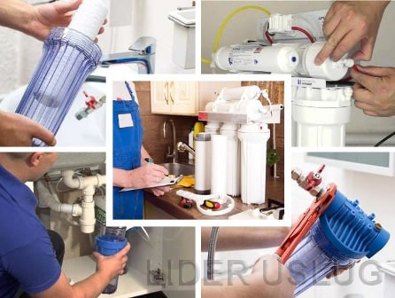

Заказывайте услуги у проверенных мастеров!

Профессиональная установка фильтра для очистки воды под раковину или мойку в квартирах или частных домах Москвы и Подмосковья. Приглашайте частных мастеров от сервиса «Лидер Услуг» – работы будут выполнены быстро, качественно, недорого. Сделайте так, чтобы ваши близкие жили с комфортом и в безопасности!
Фильтр для воды – универсальное решение, чтобы получить из крана пригодную для питья воду. Выполнение услуги требует от исполнителя определенных знаний, опыта, сноровки. Именно поэтому в данном случае рекомендуем вызывать специалистов – это надежней и правильней.
Почему выгодно обращаться к сантехникам от нашего ресурса:
- безопасно – установка фильтра для очистки воды производится в систему водоснабжения, доверять такие работы можно только профессионалам;
- оперативно – мастер проведет магистральную врезку за считанные минуты;
- срочно – если потребуется, специалист подъедет к вам уже сегодня.
На нашем сайте регистрируются только проверенные исполнители. Вы можете быть уверены – установка очистительных систем будет проведена грамотно и в нужном порядке. Предпочитаете пить чистую и вкусную воду – оставляйте заявку. И не лезьте в водопровод сами, это чревато последствиями.
Качественная установка фильтра для воды – быстро и удобно
Площадка LiderUslug предлагает широкий спектр услуг, среди которых установка фильтра для воды занимает особое место. Основное внимание в данном случае уделяется качеству исполнения, так как от порядка и правильности соединений картриджей зависит степень очистки носителя.
Установка фильтра специалистами от нашего сервиса означает:
- выполнение работ любой сложности с фильтрами одно-, двух- и трехступенчатой очистки;
- удобный формат заказа – достаточно заполнить форму заявки на сайте или озвучить свои пожелания менеджеру по телефону;
- скорость выполнения – для установки мастеру потребуется от 40 до 60 минут в зависимости от сложности конструкции системы.
В наш сервис обращаются жители мегаполиса и области – все те, кто заинтересован в том, чтобы пить качественно очищенную воду. Носитель в магистральном трубопроводе может содержать остатки реагентов, хлор, мелкие примеси, микробиологические включения, неорганические соединения. Избавиться от них можно только с помощью специальных картриджей.
Вызывая мастеров, рекомендованных нашим ресурсом, вы гарантированно получаете идеально выполненную работу – то есть чистую воду, без запаха, прозрачную и безопасную для здоровья.
Профессиональная установка фильтра очистки воды по низким ценам
Установка фильтра для воды по цене, гораздо меньшей, чем остальные предложения на региональном рынке, – вот основная причина, почему для выполнения услуги вызывают специалистов от нашего сервиса. При выборе исполнителя заказчики сравнивают не только качество, но и расценки. Обращаясь на наш сайт, вы имеете возможность заплатить на 40-60 % меньше, чем при вызове мастера из сервисной компании. А это уже внушительная цифра.
Если вы выбрали фильтр для очистки воды и оформили заявку в «Лидер Услуг», вы гарантированно получаете:
- отличное качество установки – на нашей площадке зарегистрированы только профессионалы;
- доступную стоимость услуг – сантехники работают сами и «из дома», отсутствие лишних расходов на аренду и зарплату сотрудникам способствует тому, чтобы работать по разумным ценам.
Еще одна важная причина, почему исполнители от Lider Uslug выполняют установку очистительных систем в магистраль дешево, – рекомендации заказчиков, соответственно – больший объем работ. Также, если вам необходима помощь в подборе фильтра и картриджей, специалисты проедут вместе с вами в магазин.
Наш сервис представляет лучших специалистов-частников. Оставляйте заявку и договаривайтесь с мастером. С нами – надежно, без обмана, без переплаты.
Как правильно установить фильтр для очистки воды своими руками
Не нужно верить тем, кто говорит, что это очень просто. Установка фильтра для очистки воды – дело ответственное и требующее особого внимания. Несерьезное отношение обязательно обернется протечками и, в лучшем случае, испорченной мебелью. Худший вариант – затопленные соседи, проживающие внизу.
Фильтр мало правильно выбрать, его нужно установить с безупречным качеством. Для этого понадобится не только желание, но также некоторые навыки работы с сантехникой.
Мой рассказ сегодня – как правильно установить фильтр для очистки воды в квартире или частном доме. Предупреждаю, если нет уверенности в своих силах, разумней вызвать сантехника, особенно в тех случаях, когда стоит вопрос о врезке устройства в трубы. Обычно это бытовые фильтры грубой очистки, ставят их на входе, чтобы избежать попадания песка, частиц железа, слизи из общей системы в дом.
Нужный инструмент для качественной установки фильтра очистки воды
Алгоритм установки фильтра для очистки воды примерно одинаков, может отличаться лишь нюансами, в зависимости от особенностей конкретной модели. Устройства поступают в продажу полностью укомплектованными для дальнейшего обслуживания, а вот инструмент для монтажа придется доставать свой.
Для установки понадобятся:
- дрель со сверлом 12 мм – понадобится для монтажа дополнительного крана под питьевую воду;
- разводной ключ, трубчатый ключ на 14 мм – для работы с разъединением узлов и закручиванием гаек;
- фум-лента, пакля – для уплотнения мест соединения труб и шлангов;резак для труб, нож – понадобятся в том случае, если предстоит врезка в трубу.
Теперь можно приступать к установке. Важный момент – основной особенностью монтажа проточных фильтров является то, что одну систему устанавливают под одну точку водопотребления.
Правильная подготовка места установки
Как правило, фильтры для очистки воды устанавливают под мойкой. Сама система при этом скрыта от глаз, в тоже время, при необходимости можно легко добраться до основных узлов или заменить картриджи.
Основные требования к месту установки фильтра:
- свободный доступ к сантехническим узлам для работы или ревизии – сифону, вентилям;
- наличие достаточного пространства для удобного монтажа фильтра и дальнейшей замены картриджей;
- не допускается сжатие колб, шлангов фильтра перегородками или иными предметами.
Впоследствии при эксплуатации фильтр также не рекомендуется захламлять пространство под мойкой или раковиной. Одним неосторожным движением можно сбить систему подключения или даже ее повредить.
Комплектация фильтров для очистки воды
После того, как место подготовлено, можно приступать к установке. Фильтры для очистки воды продают уже в собранном виде, картриджи (обычно их число колеблется от 3 до 5) уже помещены в колбы и соединены между собой в нужном порядке.
Берем инструкцию и проверяем комплектность фильтра, это нужно сделать еще до начала работ. В пакет входят:
- кран для очищенной (отфильтрованной воды);
- соединительные шланги или трубки на вход и выход;
- тройник (проходной краник), фитинги, прокладки;
- кронштейны для фиксации фильтра;
- специальный ключ для откручивания и замены картриджей.
У фильтров с системой очистки обратного осмоса в комплектацию входит также накопительный бак, мембранный элемент, дренажные хомуты на канализацию.
Основные этапы установки фильтров для очистки воды
Все работы с сантехникой начинаются с отключения воды. При установке фильтров также необходимо перекрыть кран, регулирующий подачу по этой линии, и снизить давление в системе. Для этого нужно просто открыть кран, когда остатки воды вытекут, можно приступать к работе.
Монтаж фильтра для очистки воды подробно описан в инструкции вместе с указанием схем. Но немножко расшифруем, вдруг что-то будет непонятно.
Установка состоит из нескольких этапов:
Монтаж крана для очищенной воды
Прежде всего, выбирают место, где он будет располагаться. Специалисты советуют устанавливать кран немного в стороне от основного, на раковине или столешнице, это уже дело вкуса.
В каком порядке действовать:
- Просверлить отверстие под кран – сверла на 12 мм должно хватить, так как наружный диаметр крана не превышает 10 мм.
- Надеть на кран декоративную и уплотнительную прокладку, вставить кран в проделанное отверстие.
- Зафиксировать кран снизу при помощи стопорной шайбы и гайки. Гайку затягиваем трубчатым ключом.
- Металлический наконечник шланга от фильтра ставим в краник и затягиваем гайкой, которую предварительно на него надели.
Кран должен стоять крепко, не шататься.
Установка тройника
Тройник необходим для того, чтобы с одной раздаточной точки одновременно можно было подключить две системы – обычный кран и фильтр для очистки воды.
Как работаем:
- Откручиваем соединяющий шланг, который ведет непосредственно к смесителю, от трубопровода.
- Тройник подсоединяем к патрубку, предварительно убедившись, что прокладка находится на месте. Накидную гайку закручиваем разводным ключом до упора.
- Проверяем герметичность соединения, предварительно перекрыв подающий кран. Открываем вентиль на подающем трубопроводе, смотрим. Если узел пропускает воду, затягиваем гайку еще.
- К одному из входных отверстий подсоединяем шланг от смесителя, при необходимости уплотняем фум-лентой (это касается всех соединений).
- Подводящую трубку от фильтра нужно также присоединить к тройнику. Для этого вынимаем из-под цанги стопорную клипсу. Смоченную водой трубку вводим на 15 мм, фиксируем цангу стопорной клипсой.
Наверное, это был самый сложный этап установки. Далее все гораздо проще.
Крепление фильтра
Основное требование – фильтр очистки воды должен стоять так, чтобы можно было легко поменять картриджи. Свободное расстояние сверху и снизу должно составлять не менее 10 см. Фильтр крепят на обычные саморезы, они неплохо выдерживают вес установки. В некоторых моделях в комплект входит шаблон, который прикладывают к стенке стола-тумбы. С ним установка будет еще проще – не надо ничего вымерять, точки крепления видны сразу.
Заключительные работы
Осталось только подсоединить шланг, ведущий на краник с питьевой водой, к фильтру для очистки. Один конец уже подсоединен, свободный крепим на выход из фильтр фиксируем стопорным кольцом.
Работа сделана.
Подготовка фильтра к работе
Теперь осталось только «прогнать» систему, то есть подготовить наш фильтр для очистки к работе. Открываем вентиль, подключенный к фильтру кран и ждем несколько минут, пока выйдет воздух. Воде нужно время, чтобы пройти весь «путь» от вентиля через картриджи до краника.
Последний шаг – вода должна проливаться примерно 10 минут. Этого вполне достаточно, чтобы фильтр был готов к работе.